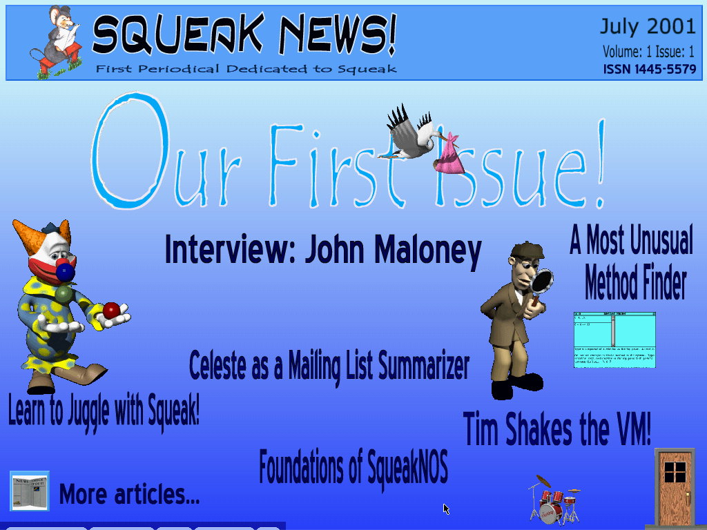
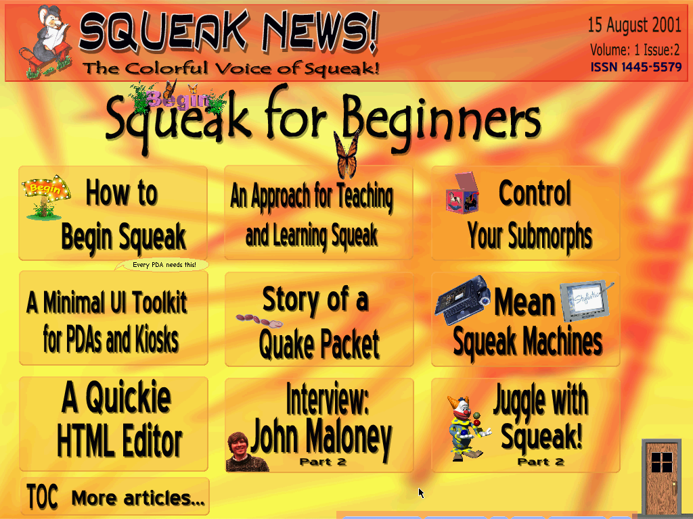
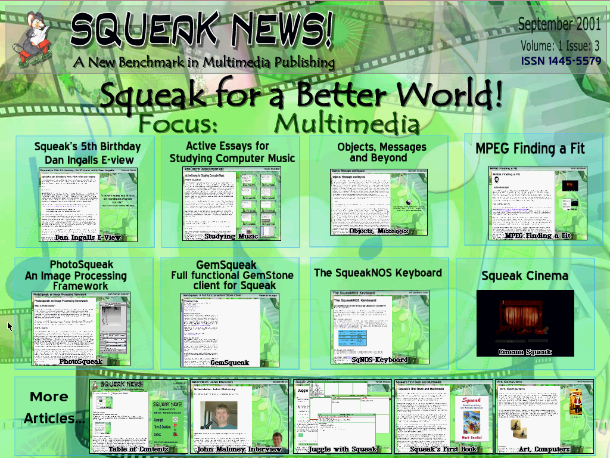
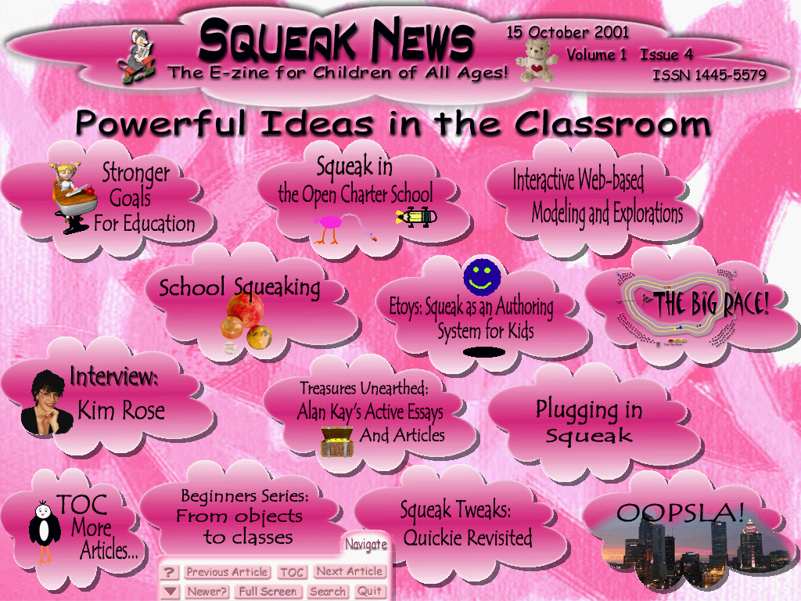
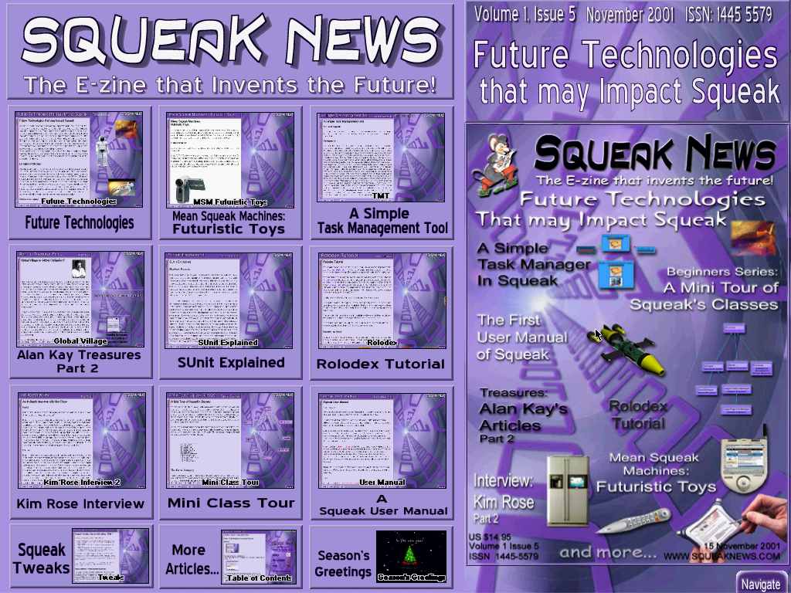

Squeak News E-Zine Copyright © 2001 Tansel Ersavas. Featured articles Copyright © their respective author(s).
Web player using SqueakJS by Vanessa Freudenberg, 2020.
All Issues
Volume 1 Issue 1, July 2001

Open Issue #1
- Cover Page
- Did you have fun with our cover page? We certainly did. A little heavy with animation, a little slow on slower machines, but still enjoyable. So if at any point you would like to return to it please feel free.
- Our First Issue
- What On Earth Are We Doing? by Tansel Ersavas
- Well, now you know. Read all about it in this editorial note.
- This month in the Squeak World by Bijan Parsia
- This month's news include summaries of the activity of the Squeak list and the Squeak foundation list. Squeak in the press and Squeak Central's new move is high on the agenda.
- Mini E-View with Dan Ingalls
- Do not miss this mini E-view with Dan Ingalls about the latest move of Squeak Central and future of Squeak!
- A Most Unusual Method Finder by Ted Kaehler
- In this essay Ted takes us through the Method finder and the idea behind it. Ted explains how he started writing the method finder, how it works, how the symbol table is searched, how "methods by example" works and how method finder handles an exhaustive search without causing any damage to the system.
- Interview with John Maloney
- Part 1: Before Apple
- In the first part of this in-depth interview, we talked with John about the early days: how he started working with Smalltalk, his early Xerox days, the origins of Celeste, his experience with other systems, constraint based programming, Self and the birth of Morphic.
- VMMaker - a tool to make VM making simpler by Tim Rowledge
- In this article, Tim explains the VmMaker and the motive behind it. Tim's VmMaker makes the process of generating VMs much easier. Tim explains the usage of VmMaker and he states possible enhancements to it.
- The Foundations of SqueakNOS by the SqueakNOS team / Luciano Notarfrancesco
- SqueakNOS is an ambitious project that aims to strip that useless huge nappy padded underwear of computers that is called an "operating system" and replace it with a layer all written in Squeak! Here the SqueakNOS team explain how they intend to do it, what they have done so far, how they have done it, and what they aim to do.
- Squeak Tweaks: Celeste as a Mailing List Summarizer by Bijan Parsia
- In this corner of the e-zine, Bijan will show us how to tweak Squeak with interesting insights.
- In his first article Bijan takes Celeste and turns it into a mail list summarizer! He explains the need for the mail summarizer (after all he volunteered for the Squeak News monthly email summaries!) and step by step explains how Celeste is turned into a handy mail summarizer sidekick. After reading this article you will have a good idea about how he can categorize and sift through the enormous amount of email that Squeak list generates with a little help from his new Celeste-MLS!
- Squeak Documentation Initiative
- Squeak Documentation initiative is a Squeak News sponsored activity that will start with this issue. Here we will explain mechanisms and ask for volunteers for this initiative. The goal is to create a giant living reference manual and a reference server that any Squeak that is on the net can hook up to and access to on-line documantaion. This documentation will be in a form that can be embedded in any image and will have built in mechanisms to update itself when changes are made and post these updates to a central server or other peers. Another useful document is a user guide which will also be semi-automatically generated. Documentation swiki pages will be used to capture most additions and modifications to the documentation. More details will soon be available from the Squeak News site.
- Fun with Squeak: Learn to Juggle with Squeak by Tansel Ersavas
- In this article Tansel takes you to a journey that will juggle two things at once: learning juggling while writing a tutorial that teaches juggling. It is a meta-juggling tutorial that is a lot of fun. Most aspects of juggling from choosing the right balls to how not to juggle with raw eggs are clearly illustrated with animated examples
- Squeak Notebook by Torsten Bergmann
- A little example of how a SqueakBook can look like a notebook
- Best of Bob's SuperSwiki: Squeak or How the Mouse Roars
- Each month we will feature a project published in Bob's super Swiki or other public Super Swikis. This month we feature the first part of Torsten Bergman's HTMR: Squeak or How the Mouse Roars' series.
- Squeak Graphics by Ali Chamas
- Graphics created by Ali Chamas using Squeak captured the attention of many people and some of these graphics were featured in web sites such as flipcode.com. See them yourself.
- This Month's Quiz: Detecting an Alarm via Email from a Remote Location
- Tributes: Pat Caudill and Jerry Archibald
- This month we have lost 2 Smalltalkers. Pat Caudill (1945-2001) passed away June 14, 2001, and Jerry Archibald (1940-2001) passed away June 22, 2001.
All Issues
Volume 1 Issue 2, 15 August 2001

Open Issue #2
- Focus on Beginners
- Starting with this issue we will focus on beginners and every issue of Squeak News will feature at least one article targeted at beginners. This month we feature two articles that would help beginners. You will also find in this issue very interesting articles about hardware that can run Squeak, a very interesting user interface framework for UI development specifically tailored towards PDAs and Kiosk style applications. The Squeak Tweaks corner will feature a quickie HTML editor. For the diehards who are determined to rip the operating system under Squeak the current installment of the SqueakNOS series is "Story of the Quake Packet". You will also find the conclusion of the Juggling article and continuation of our in-depth interview with John Maloney.
- Squeak Related News
- This month's news include summaries of the activity of the Squeak list and the Squeak foundation list and our report on fun new hardware to play with Squeak
- Monthly digest of the Squeak Mailing list by Bijan Parsia
- Every month Bijan summarizes the Squeak mailing list painstakingly by organizing postings under threads with commentary using home-bred tools that he developed. (and explained some of them in the July issue) If you are busy and can't follow the fast pace of the Squeak list this is the column to read! This section will be emailed to our email subscribers as well as posted on the on the web.
- Mean Squeak Machines
- In these articles we chase our DynaBook dreams and look at some of the latest systems from super PDAs to desktop units that can run Squeak happily.
- Cool Peripherals
- We also investigate some peripherals that can enhance our Squeak experience from tablet-screens to solid-state USB disk units that are attached to key-rings.
- How to Begin Squeak by Tansel Ersavas
- This article is the first of a series about Squeak that aims to take a person from the beginner stage to the level of a highly sophisticated programmer during the course of this (long) series. In this article, Tansel outlines basic concepts of object oriented approach and Squeak. He emphasizes differences between Squeak and most other languages, explains why it is harder for people who have been exposed to other languages to learn Squeak and suggests strategies that would accelerate the learning process.
- An Approach for Teaching and Learning Squeak by Michael Guenter
- Michael brings us the experience of a teacher and proposes an approach for learning and teaching Squeak. He defines different kinds of newbies and discusses best approach for them and elaborates on his "study buddies" idea which has already attracted interest.
- Control your Submorphs by Ted Kaehler and Andreas Raab
- In this active article Ted and Andreas take us to a tour of the new layout mechanism of morphs recently introduced to Squeak by Andreas Raab. As nicely stated by Ted: "Why talk about something when you can see it in action", this article will come to life when playing with it very true to the soul of Squeak News.
- The second part of an In-depth Interview with John Maloney
- In the second part of this in-depth interview, John talks about the Apple days, the birth of Squeak, how Squeak became on open source project, and how his expectations were exceeded with community support. We also discussed with him about the past life of Morphic before Squeakt.
- A Minimal User Interface Toolkit for PDAs and Kiosks by Tansel Ersavas
- In this article Tansel introduces us to a very basic set of tools that help us implement simple user interfaces especially suitable for point and click applications. These applications are more likely to be useful on environments where using Morphic is not feasible such as small PDAs and Kiosk applications that operate on hardware with limited resources and where the input is limited to a touch screen or stylus input.
- Story of a Quake Packet by the SqueakNOS team
- Do you know what these naughty people at the SqueakNOS team do when their workmates go into a frenzy of playing Quake? They peep the network activity using nothing other than their naughtier collaborator Squeak! Read this captivating story of intrigue and deception, and find out all about those Quake packets that lurk at your network pipes while people are playing Quake!.
- Squeak Tweaks: A Quickie HTML Editor by Bijan Parsia
- In this corner of the e-zine, Bijan shows us how to tweak Squeak with interesting insights.
- In this article Bijan has a go at a quickly put together HTML editor which could be the beginning of a HTML editor liberator!
- Juggle with Squeak by Tansel Ersavas
- In this part of this series Tansel finally puts his act together (almost), both about juggling, and finishing this tutorial, and the rest of the people can finally juggle. He still has to write about the beautification process though.
- Squeak Documentation initiative
- Squeak Documentation initiative is a Squeak News sponsored activity that will continue with this issue. This month's initiative will be discussed on our documentation SWiki later when the documentation SWiki is up and running.
- Squeak quiz with surprize rewards
- Every month, we have a question that addresses a specific problem and collect all answers. We will then publish selected answers and declare one as the "editor's choice". The person who sent the selected solution will receive a mystery reward from us.
All Issues
Volume 1 Issue 3, 15 September 2001

Open Issue #3
- Squeak for a Better World!
- We changed our theme to Squeak for a Better World after the tragic events of September 11. Read all about the shock, frustrations and ideas about Squeak for a better world.
- Focus: Multimedia
- There is a lot in Squeak News this month. Close to the end of this month is the 5th anniversary of the day Squeak was placed on the Internet for the rest of the world to enjoy and we e-talked with Dan Ingalls about this most important event. The focus of this issue is Squeak and Multimedia and we have a significant amount of content about the subject. We feature two interactive demos: Squeak Cinema: A demo of the Squeak MPEG player, and SqueakAmp: The Squeak MP3 player. In addition we feature an article about the MPEG player of Squeak by John McIntosh, the full set of the active essays on studying computer music by Mark Guzdial and an article about PhotoSqueak by Juan Manuel Vuletich. Karl Ramberg's contribution is a short active essay about Art and Computers. Our beginners series focus is objects, messages and beyond. An example of system level programming in Squeak is given in the article "The SqueakNOS keyboard". We also solicited an article about one of the recent developments about Squeak GemStone connectivity and we are happy to feature this article about GemSqueak.
- Squeak Related News
- This month's news include an E-view with Dan Ingalls, summaries of the activity of the Squeak list and John McIntosh' Essen STUG reports.
- Squeak's 5th Birthday! An e-view with Dan Ingalls
- After looking at all the evidence we decided that the 25th September 1996 was the day Squeak was unleashed to us mortals (incidentally after about 9 months of incubation)! We declared this day to be Squeak's "birth" day. We asked Dan about that day, a little earlier, and a little later, and Dan answered!
- Monthly digest of the Squeak Mailing list by Bijan Parsia
- Every month Bijan summarizes the Squeak mailing list painstakingly by organizing postings under threads with commentary using home-bred tools that he developed. (and explained some of them in the July issue) If you are busy and can't follow the fast pace of the Squeak list this is the column to read! This section will be emailed to our email subscribers as well as posted on the on the web.
- The World of Squeak: Objects, Messages and Beyond by Tansel Ersavas
- This article is the second installment of a series about Squeak that aims to take a person from the beginner stage to the level of a highly sophisticated programmer during the course of this (long) series. In this article, Tansel explains the basic concepts of Squeak such as objects, messages and relationships between objects.
- Active Essays for Studying Computer Music by Mark Guzdial
- If Mark Guzdial isn't an institution, he should be made into one. Author/instigator/editor of the two current Squeak books, hacker of PWS & the original Swiki, hoster of Swikis, teacher of Squeak... He, his students, and his classes are always throwing out cool stuff for the rest of us. For his class on "Computer Music Implementation", he wrote a series of active essays, which cover everything from the built in Squeak sound tools to MIDI. Aside from being nicely written/constructed on interesting topics -- i.e., an enjoyable read -- they are great examples of active essays. Mark was kind enough to let us feature the entire series in Squeak News with a bonus introduction that puts these great active essays in perspective.
- MPEG: Finding a Fit by John McIntosh
- Among all these activities that keeps us all informed about what is going on around the world, John found the time to write about that magical plug-in that enables us to play highly compressed video and from within the comforts of Squeak.
- Squeak Cinema
- A showcase of the MPEG player and some of Squeak's presentation abilities. It features a trailer of a movie to be released next year by 20th Century Fox (C) 20th. Century Fox. The main feature is named "The Killer Bean Part 2, The Party" short masterpiece by Jeff Lew, slighltly over 6 minutes. This is an animation fully done by the author himself in 3 years on one computer. After the movie was released on the net it was downloaded more than 1 million times and helped him to join to the ranks of Hollywood's magic makers and he has been involved in movies such as the Matrix and the Matrix 2. We wish to advise our audiance that the movie contains strong violance and people who can't watch coffee beans destroyed should refrain from watching the movie. Sorry? What? No we don't have any grudges against coffee in any shape and we haven't hired the killer bean for any jobs.
- SqueakAmp: Squeak's MP3 player
- A demonstration of the MP3 playback ability of Squeak that is written by Bob Hartwig using the MPEG plug-in.
- Art, Computers by Karl Ramberg
- Karl tosses questions about Art and Computers and starts experimenting in this short and sweet active essay...
- The Conclusion of our In-depth Interview with John Maloney
- In the conclusion of this in-depth interview, we talked with John about Morphic, how it differed from the original Self Morphic, and what is in the crystal ball for Morphic. We also talked about the Disney days, some projects that John got involved and more...
- The Squeak Keyboard: An Introduction to Low Level Programming in SqueakNOS by the SqueakNOS team
- This article explains how Squeak handles keyboard programming from within SqueakNOS. Don't try this code at home! It will only work within SqueakNOS.
- PhotoSqueak: An Image Processing Framework by Juan Manuel Vuletich
- What started as a school project may well turn out to be a powerful general purpose digital image processing system for Squeak. Learn all about it.
- GemSqueak: A Full Functional GemStone Client by Valeria Murgia
- GemSqueak is a full featured and full functional GemStone client. Valeria Murgia with collaboration by Leandro Caniglia explains this exciting project. Keep an eye for their SqueakAttic OODB project as well.
- Book Summary: Squeak's First Book and Multimedia
- This is the first book summary published in Squeak News and naturally it is about the first book on Squeak ever published.
- Globe by Torsten Bergmann
- A cool demo of 3D on a background created by the author.
- Juggle with Squeak by Tansel Ersavas
- In this part of the series Tansel beautifies the Juggling Scene and explains how to create a simple user interface for the Juggling demo.
- Squeak quiz with surprize rewards
- This month we will not have a Squeak quiz, instead we are preparing a Squeak Challenge
All Issues
Volume 1 Issue 4, 15 October 2001

Open Issue #4
Powerful Ideas in the Classroom
- Editor's Note
- Monthly News:
- This month's news include summaries of the activity of the Squeak list and John McIntosh's OOPSLA trip reports.
- Monthly digest of the Squeak Mailing list by Bijan Parsia
- Every month Bijan summarizes the Squeak mailing list painstakingly by organizing postings under threads with commentary using home-bred tools that he developed. (and explained some of them in the July issue) If you are busy and can't follow the fast pace of the Squeak list this is the column to read! This section will be emailed to our email subscribers as well as posted on the on the web.
- OOPSLA Trip Reports by John McIntosh
- John is an avid follower and documenter of almost every event. We asked if he would allow his excellent OOPSLA trip reports that are published on his site to be included in Squeak News and he kindly allowed us to include them with the Squeak News e-zine. Once we merged these reports with pictures of Michael Rueger it turned out to be a lively digest, just like if you were there!
- Features
- Stronger Goals for Education by Alan Kay
- In this article Alan defines stronger goals for education and explains the role of Squeak in this picture. A must read for all parties who have an interest in education.
- Treasures Unearthed: Alan Kay's Active Essays and Articles
- We used this opportunity to feature many of Alan's past articles and active essays. As always Alan was very generous in allowing us to reprint these immense treasures in our colorful format and we have tried to illustrate them a little as well.
- Authoring by Alan Kay
- This is the introduction published on SqueakLand.org. It is a short but a very powerful article summarizes the purpose and the origin of Squeak
- EToys and SimStories in Squeak by Alan Kay
- This is a well known active essay by Alan Kay also featured on SqueakLand.org. In this active essay Alan shows us how simple scripting can be used to explain ideas that can't easily be explained. It explains the power of the Etoy system, the concept of active essays, why Etoys are important to science and math, and how Etoys are envisioned to be used in such active essays to even encyclopedias. A must read and should be in the pockets of every trainer!
- Computers, Networks and Education by Alan Kay
- In this classic originally printed in Scientific American in September 1991 issue Alan
- Science Already IS Art! by Alan Kay
- A short and sweet article originally written for The San Jose Museum of Technology brochure.
- We will also publish more of Alan Kay's articles next month
- Squeak in the Open Charter School by B.J. Allen-Conn
- B.J. has been involved in teaching children about interactive computing environments since 1986. Benefit from her experience in teaching Squeak to children. There are several examples of students of the Open Charter School. Be sure to check them all.
- The Big Race! by Open Charter School students
- Don't miss this Grand Prix of cars developed by students racing to capture the elusive championships. The creativity of students shine when cars of all colors and shapes take on each other at the track!
- Interactive Web-based Modeling and Explorations by Naala Brewer
- In this article Naala details her interactive web-based explorations with students during the course of her teaching of interactivity through Squeak.
- Etoy examples by various students
- Cool examples of ingenious usage of Squeak Etoy system by students in 4th and 5th grades in the Open Charter School. Be inspired by their creativity!
- School Squeaking by Cathleen Galas
- Cathleen teaches at the Seeds University Elementary School, which is the laboratory school for the Graduate School of Education and Information Studies, UCLA. As a teacher already experienced in introducing kids to the Microworlds logo she details her experience with Squeak and Squeak's advantages over other systems. Her illuminating observations and student feedback make an excellent case for Squeak's use in the classroom.
- Youngest Users of Squeak Speak
- Feedback by some of the youngest users of Squeak
- Etoys: Squeak as an Authoring System for Kids (and Kids at Heart!!)
- We feature every tutorial we can find about the Etoy system by various authors. Enjoy them all!
- Squeak News Exclusive Interview with Kim Rose
- This month we had a chance to talk to Kim Rose (co-Director of the Viewpoints Research Institute: now home of Squeak Central, long term member of the Squeak Central, co-editor of the book Squeak: Open Personal Computing and Multimedia) in depth about how she got involved in computing and Squeak, media and cognitive science, her interest and efforts in Squeak and kids, Apple days, Disney days, and post Disney. This month we will publish Part 1 of this 3 part series.
- Plugging in Squeak by Michael Rueger
- In this article Michael takes us from the beginning and tells us how the Squeak plug-in came to life, where was it first used, how is it used and what is and what is not in the pipeline.
- As a courtesy to our subscribers we include the plug-in installers for various platforms for you to save you some download time.
- From objects to classes by Tansel Ersavas
- This article is the third installment of a series about Squeak that aims to take a person from the beginner stage to the level of a highly sophisticated programmer during the course of this (long) series. In this article, Tansel explains the concept of a class, how classes and objects are related, and how classes are related to each other.
- A Minimal Multimedia Manager for PDAs and Kiosks by Tansel Ersavas
- This article will be published on our SWiki later due to heavy commitments and health problems of the author. We apologize.
- Juggle with Squeak by Tansel Ersavas
- In this part of the series Tansel finishes the demo and packages it with a gift wrap!
- Little Butterfly
- A little poem by a very sweet girl!
- Squeak's Most Wanted List
- Starting this issue we will create a "Most Wanted list" for Squeak and offer some rewards. Since it will be on an SWiki page you are free to add your "most wanted feature or function" to the list. In every issue of Squeak we will recite the top of the list, newcomers to this list and report progress if any. This month there is a grand challenge: Target:Advance
All Issues
Volume 1 Issue 5, November 2001

Open Issue #5
Future Technologies that may impact Squeak
- Editorial
- The Squeak Mailing List Summary
- Actually, this month it is not a summary, but an entire dump of all the mails in the mailing list.
- Future Technologies that may Impact Squeak by Tansel Ersavas
- In this issue of Squeak News we decided to have a quick trip to the near future and come back with some gossip about what might impact Squeak and in what ways.
- Mean Squeak Machines: Futuristic Toys
- Continuing our future theme is the seciton on mean Squeak machines: Futuristic toys. Enjoy them!
- A Simple Task Management Tool by Tansel Ersavas
- This article introducs a simple task management tool which could be used as a simple project management tool as well as a task scheduling tool.
- Alan Kay Treasure Chest
- In this issue we continue to publish past Alan Kay articles. This month we feature two more of his famous articles.
- Global Village or Global Civilization? by Alan C. Kay
- Revealing the Elephant: The Use and Misuse of Computers in Education by Alan C. Kay
- The Rolodex Tutorial by John Hinsley
- Here at last John Hinsley's Rolodex Tutorial in pure Squeak!
- SUnit Explained by Stephane Ducasse
- A clear and detailed explanation of the SUnit framework useful not only for using the framework but also discusses the issues related to the imporatnce and practicability of testing using SUnit.
- Squeak User Manual by Maarten Maartensz
- Maarten has a real hard go at the elusive goal of documenting Squeak. His user manual is a very concrete definition of Squeak. We will publish the continuation of his efforts as well.
- Squeak Tweaks: Are we Still Editing HTML? by Bijan Parsia
- The short answer is, yes!
- Squeak for Beginners: A Mini tour of Squeak's Classes
- Enjoy some of Squeak's most used classes with some insider information
- Squeak News Exclusive Interview with Kim Rose: Part 2
- A Mini Utility: Auto Save Morph
- Season's Greetings!